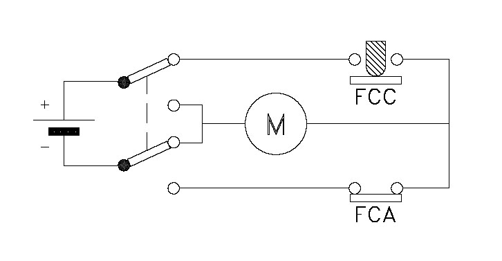
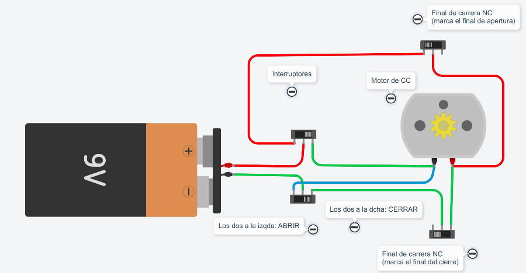

Diseño del circuito
- Duración:
- 1 sesión
- Agrupamiento:
- En parejas
Dibuja en TinkerCad un motor eléctrico con una pila (prueba a poner los cables y luego cambiar la polaridad). ¿Ves cómo cambia el sentido de giro del eje del motor?
Investiga sobre cómo podemos diseñar un circuito para cambiar el sentido de giro de un motor accionando solo un botón.
Diseña en tu cuaderno el circuito y luego en TinkerCad y simúlalo.
No te preocupes, aquí te dejo la solución.
Primero el esquema eléctrico:

Imagen extraída del blog de Pedro Jara
Explica con tus palabras cómo funciona.
Ahora, te presentamos una posible simulacion en TinkerCad:

Imagen original creada con TinkerCad Circuits